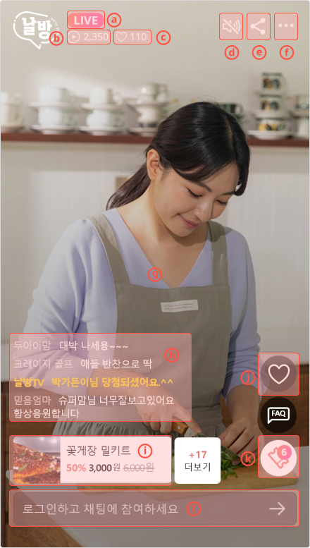
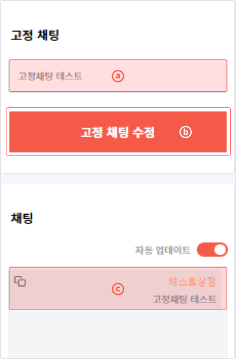
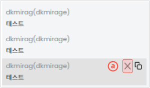
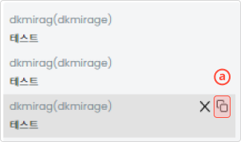
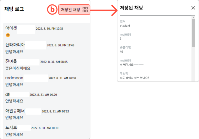

라이브 방송 진행
-
날방TV 방송 진행 화면에 대해 알아보겠습니다.
-
ⓐ 라이브/리허설 표기
현재 시청하는 방송의 종류
-
ⓑ 접속자 수 표기
현재 방송을 시청 중인 접속자의 수를 표기
-
ⓒ 하트
방송 중 시청자가 날린 모든 하트의 수
-
ⓓ 소리 제어
- 방송 소리를 키고 끄는 기능
- 기본값은 소리 꺼짐
-
ⓔ 공유 기능
날방 방송 주소를 복사/공유
-
ⓕ 설정 메뉴
날방 설정 메뉴
-
ⓖ 방송화면
라이브 및 리허설 송출되는 영상이 실시간 재생
-
ⓗ 채팅
생방송 중 사용자와 운영자의 채팅 내용이 출력
-
ⓘ 상품
방송 관리에서 추가한 판매 상품들이 노출
-
ⓙ 하트 버튼
- 시청자용 방송에 대한 호감 표시
- 방송 종료 후 다시 보기에서도 적용
-
ⓚ 쿠폰 알림
설정된 쿠폰이 있을 때 알림 아이콘 클릭 시 쿠폰 관련 팝업이 노출
-
ⓛ 채팅 입력
- 채팅 입력칸
- 자사몰 회원과 연동되어 자사몰에 로그인한 회원만 채팅에 참여 가능
-
ⓐ 라이브/리허설 표기
-
날방TV 방송 중 채팅 관리
- 날방TV 라이브는 진행 중에 채팅을 실시간 관리할 수 있습니다.
- 운영자 채팅
운영자 채팅은 사용자가 아닌 방송 운영자용 채팅을 말하는 것으로 방송에 필요한 전달 사항을 사용자에게 알리는 등 다양한 형태로 사용됩니다.
- 운영자 채팅 기본 기능
- ⓐ 채팅창
입력된 채팅들이 출력되는 영역
- ⓑ 운영자 채팅창
운영자 채팅을 일반 사용자의 채팅과 다르게 출력
- ⓒ 색상
운영자 채팅 컬러 선택
- ⓓ 작성자 명
운영자의 별명을 입력
- ⓔ 운영자 채팅 입력
운영자 채팅을 입력하는 영역
- ⓐ 채팅창
-

-
운영자 채팅 메세지 고정
- 1. 운영자 채팅을 날방TV 생방송 화면에 고정으로 노출시키려면 ⓐ고정 채팅에 원하는 메시지를 입력하신 후 ⓑ고정 채팅 수정 버튼을 누르시면 입력한 채팅이 고정으로 노출됩니다.
- 2. 다른 방법으로는 운영자 채팅 메시지 중 고정 노출하고자 하는 메시지에 마우스를 올리면 ⓒ운영자 채팅 고정 아이콘이 노출되며, 해당 아이콘을 클릭하면 선택한 운영자 채팅이 고정 노출됩니다.
-
-

-
채팅 삭제
- 1. 삭제하고자 하는 채팅 메시지 위에 마우스를 올리면 ⓐ삭제아이콘 X가 노출됩니다.
- 2. ⓐ삭제아이콘 X를 클릭하면 선택한 채팅이 날방TV 라이브 채팅창에서 노출되지 않습니다.
유료 서비스에 한하여 지원
-
-

-
채팅 저장
- 1. 저장하고자 하는 채팅 메시지 위에 마우스를 올리면 ⓐ채팅 저장 아이콘이 노출됩니다.
- 2. ⓐ채팅 저장아이콘을 클릭하면 선택한 채팅이 저장됩니다.
-
-

-
저장된 채팅 확인
- 1. [날방TV 운영자 웹 페이지/방송관리/채팅 로그]에서 ⓑ저장된 채팅 항목을 클릭하시면 [저장된 채팅 팝업]이 노출됩니다.
- 2. [저장된 채팅 팝업]에서 저장된 채팅 메시지들만 별도로 확인 가능합니다.
-
-
날방TV 방송 중 상품 관리
- 날방TV는 생방송 중 판매 상품을 추가 또는 삭제할 수 있으며 언제든지 특정 상품을 생방송 화면에 고정 노출이 가능합니다.
- 생방송 중 상품 추가
날방TV는 생방송 중 언제든지 실시간으로 추가할 수 있습니다.
생방송 중 상품 추가는 [날방TV 라이브 방송 준비/상품 추가]와 동일한 방법으로 가능합니다.
-
상품 고정
생방송 중 특정 상품을 화면에 항상 고정할 수 있습니다. 고정 노출 상품이 없을 경우 등록된 상품들이 로테이션되며, 쇼호스트가 소개 중인 상품을 강조 노출하기 위해 고정 노출 기능을 활용할 수 있습니다.
- 1. 상품 진열 목록에서 생방송에 고정시키고자 하는 상품의 ⓐ고정 체크박스를 체크하면 해당 상품이 생방송 화면에 고정 노출됩니다.
- 2. 한 번에 1개의 상품만 고정 노출 가능합니다.
-
상품 품절
생방송 도중 상품이 품절되었을 경우 상품의 상태 값을 품절로 변경하여 노출합니다.
- 1. 품절 시키고자 하는 상품의 ⓑ품절 버튼을 클릭합니다.
- 2. 품절 상태로 변경된 것을 확인합니다.
-
상품 삭제
상품을 잘못 추가했을 때 해당 판매 상품을 삭제 처리합니다.
- 1. 상품 진열 목록에서 상품을 삭제하고자 하는 상품의 ⓒ삭제 버튼을 누릅니다.
- 2. 해당 상품이 삭제된 것을 확인합니다.
-
날방TV 방송 중 배너 관리
- 날방TV는 생방송 중 각종 배너를 실시간으로 등록 및 노출할 수 있습니다.
- 1. ⓐ배너 등록 버튼을 누르면 배너 등록이 가능한 팝업창이 노출되어 생방송 중 언제든지 신규 배너를 생성할 수 있습니다.
- 2. 생방송 중 활성화하고자 하는 배너 항목의 ⓑ노출 부분을 클릭하면 스위치가 활성화되며 방송 화면에 배너가 출력됩니다.
- 3. 활성화된 배너를 비활성화하려면 활성화된 배너의 ⓑ노출 부분을 클릭하여 스위치를 OFF 상태로 변경 시 배너 노출이 중단됩니다.
- 4. 불필요한 배너는 해당 배너의 ⓒ버튼을 눌러 리스트에서 삭제할 수 있습니다.
생방송 중 상품 추가는 [날방TV 라이브 방송 준비/상품 추가]와 동일한 방법으로 가능합니다.
-
날방TV 방송 중 쿠폰 관리
- 날방TV는 생방송 중 미리 등록된 쿠폰을 실시간으로 노출할 수 있습니다.
- 1. [날방TV 운영자 웹 페이지/쿠폰 관리] 항목에서 우측 상단의 ⓐ쿠폰 등록 버튼을 클릭하면 쿠폰 등록 팝업이 노출됩니다.
- 2. 쿠폰 등록 팝업에는 미리 등록된 쿠폰의 리스트가 노출됩니다.
- 3. 리스트 중 생방송에 노출시키고자 하는 쿠폰의 ⓑ등록 스위치 항목을 클릭하여 스위치를 활성화시키면 생방송에 쿠폰이 노출됩니다.
- 4. 모든 쿠폰이 소진되거나 쿠폰 발급이 종료되면 다시 ⓑ등록 스위치를 클릭, 비활성화하게 되면 생방송 쿠폰 노출이 중단됩니다.
- 날방TV 생방송에서 쿠폰 확인
- 1. 등록된 쿠폰들은 생방송 화면 우측 하단에 ⓐ쿠폰 아이콘으로, 등록된 쿠폰의 개수가 노출됩니다.
- 2. 생방송 화면에서 ⓐ쿠폰 아이콘을 클릭하면 등록된 쿠폰 리스트를 확인할 수 있습니다.
- 날방TV 쿠폰 확인 및 다운로드
- 1. ⓑ다운로드 버튼을 클릭하면 해당 쿠폰을 다운로드할 수 있습니다.
- 2. 쿠폰이 1장 이상일 경우 ⓒ영역을 넘겨 다음 쿠폰으로 전환할 수 있습니다.
-
1. 발열 주의
라이브 영상 송출은 CPU/GPU/통신 자원을 최대한 많이 사용하는 작업이기 때문에 PC는 물론 모바일의 경우에도 하드웨어 스펙이 중요하며 발열이 많이 발생합니다.
발열이 심해지면 하드웨어 성능 저하가 (특히 통신 부분) 발생하여 송출 시 문제가 발생할 수 있으니, 발열 발생을 최대한 막기 위해 아래 사항들을 주의하세요.- 스마트폰을 충전하면서 방송 송출하면 발열의 위험이 있습니다.
- 스마트폰 케이스는 방열을 막아 발열이 심해집니다.
- Wi-Fi보다 셀룰러 데이터가 배터리를 더 소모하고 발열이 심해집니다.
-
2. 전화 수신 주의
라이브 영상 송출 도중 전화가 수신되면 송출이 중단됩니다.
스마트폰 모델에 따라 전화 수신 알림 화면만 노출되어도 송출이 중단될 수 있기 때문에 가능한 개통되지 않은 핸드폰을 방송 전용으로 사용하는 것을 권장합니다.
개통되지 않은 핸드폰을 사용하기 어려운 환경에서는 스마트폰 자체에서 지원하는 [방해 금지 기능]을 이용해 주세요.- Android 핸드폰은 방해 금지 기능을 켜고 방해 금지 > 알림 숨기기에서 [모두 숨기기]를 활성화해주세요.
- iOS 핸드폰은 집중 모드 > 방해 금지 모드를 활성화한 후 [허용된 알림 항목]이 없도록 설정해주세요.
-
3. LTE 우선 모드
- 5G 스마트폰의 경우, 5G 신호를 찾지 못하면 LTE로 전환되며 송출이 중단될 수 있습니다.
- Wi-Fi를 사용할 수 없는 환경에서 셀룰러 데이터로 송출 시에는 LTE 우선 모드를 활성화하여 5G와 LTE가 서로 전환되지 않도록 방지하여 주세요.
-
4. 네트워크 환경 체크
- 네트워크 환경이 원활하지 않을 경우, 라이브 화질이 저하되거나 연결이 끊어질 수 있습니다. 더 나은 라이브를 위해 Wi-Fi 연결이 원활하지 않을 때에는 LTE 연결을 권장합니다.
- LTE 사용이 원활하지 않은 경우엔 반대로 Wi-Fi 연결을 시도해 주시고 신호가 분산되지 않도록 촬영 휴대폰 외에 다른 관계자들의 휴대폰은 같은 Wi-Fi를 공유하지 않도록 주의 바랍니다.
- 만약 LTE 환경도 원활하지 않다면 네트워크 유선 연결을 추천합니다.
생방송 시 주의사항